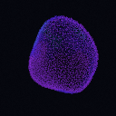
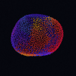
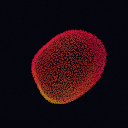

три фазы одного цикла в 54 с · 128 px · пресет c

4,5 с · холодная
выдержка 9 с из 54

18 с · фронт 18 с из 54
полоса зерна, не линия

31,5 с · тёплая
выдержка 9 с из 54
стоп-кадры эталона; живой рой:
loader-particles.html ·
loader-logo.html